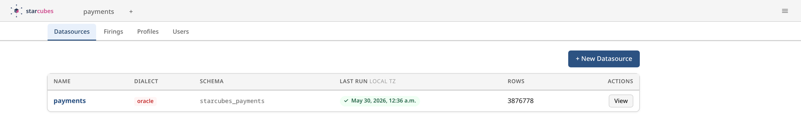
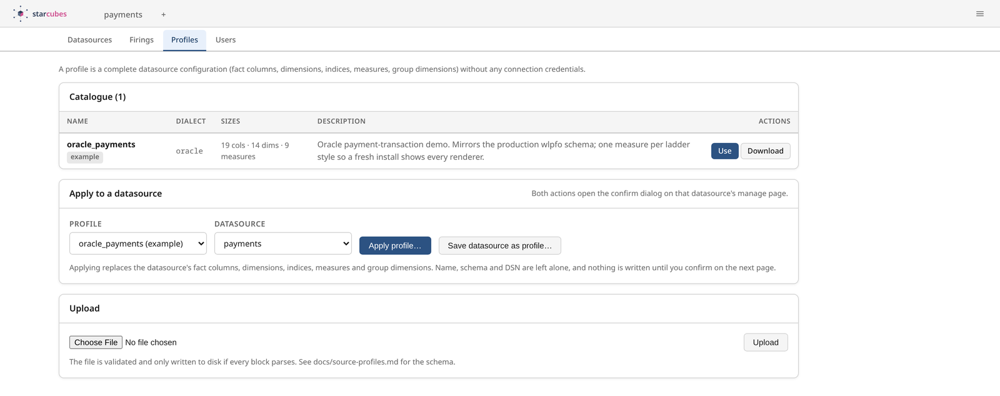
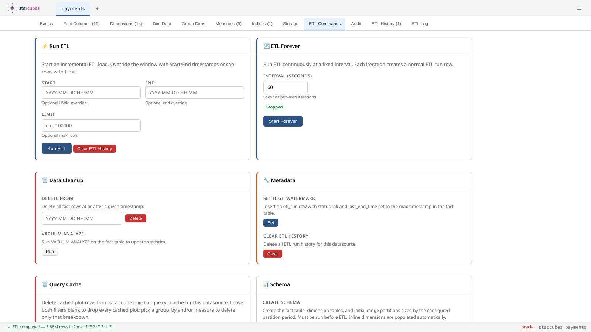
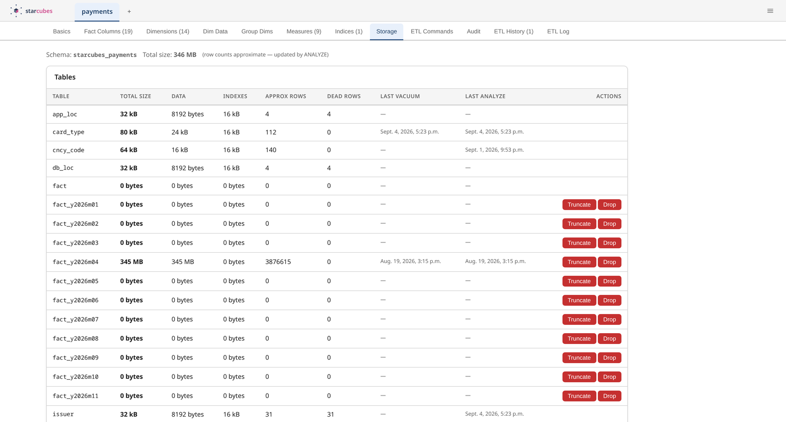
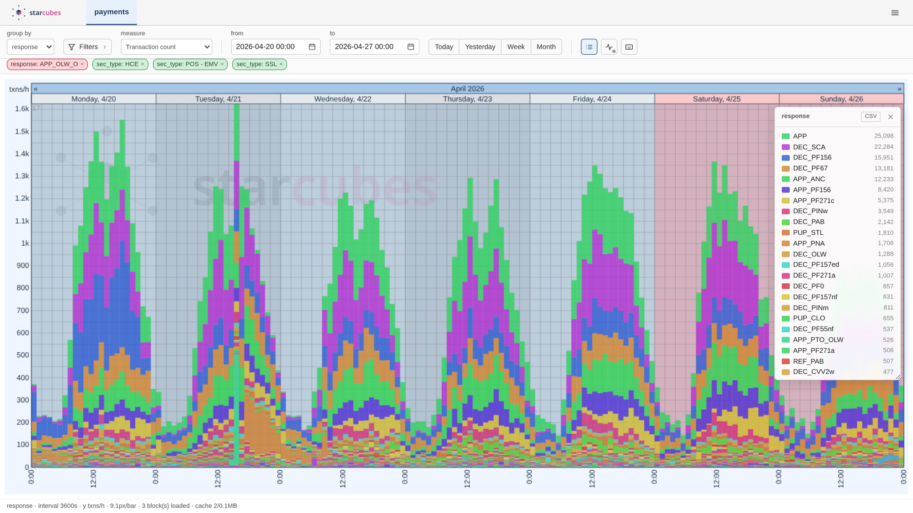
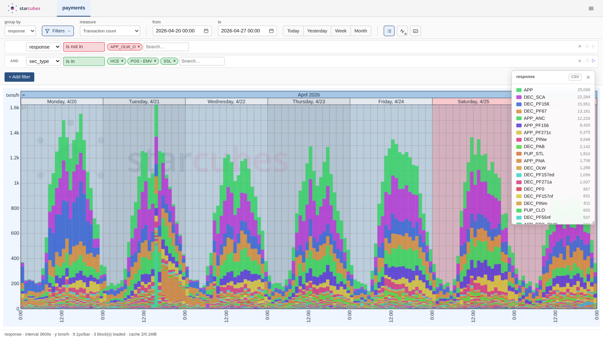
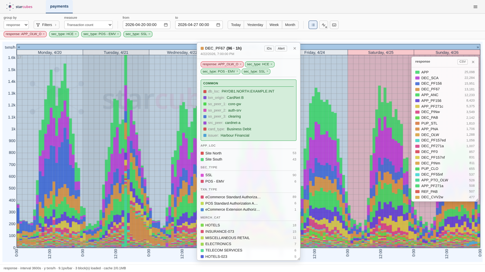
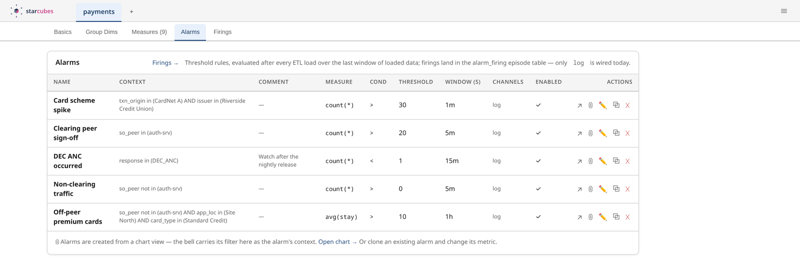

Point it at a SQL database and get a fast, filterable timeseries of what happens in it — without modelling a warehouse by hand.
Oracle · Postgres · MySQL · SQL Server → one Postgres, one app
★ blueprint · star schema in postgres
You wanted one number over time. You got three toolchains.
The chart is served straight off it — stacked bars, any dimension, any filter, in seconds.
Two sources rarely have compatible shapes. Each lives in its own Postgres schema, so neither has to compromise.
The fact table carries smallint foreign keys into per-dimension tables — that is where the 93 bytes per row come from.
Day / week / month range partitions, gap-filled automatically · BRIN on the time column · indices built after the first bulk load, not before.
Series.where per chunk replaces every dim key
in a single numpy pass; super-fast, and it scales across
N worker processesIncremental on the watermark, killable mid-run, with a late-arrival overlap for sources that publish out of order.
Base table, watermark column, a row per fact column — that is the whole model.
Save it as a profile — a YAML file, deliberately without any credentials — and the next install is one click.


New Datasource — name, dialect, connection URL. Apply a profile, or fill in base table, watermark and fact columns yourself.


Incremental, a manual window override, forever at an interval — or kill it. Every run writes a row and its own log file. Storage cost per table and per partition, right next to it.


Group by any dimension, filter on any other — nested AND/OR, is-in / contains / starts-with. Filters live in the URL: a view you found is a link you can send.


Every bar breaks down to its dimensions and then to individual primary keys. The bell carries the chart's filter into a new alarm; breaches are recorded as episodes with a first-breach and a closed watermark. And a read-only SQL console with history and CSV export is one click away.
| Starcubes | |
|---|---|
| Ingest | Oracle, Postgres, MySQL, SQL Server · incremental on a high watermark · three-stage ETL with COPY FROM · auto-dimensions |
| Storage | One star schema per datasource · smallint dimension keys · day/week/month partitions · BRIN on time |
| Explore | Stacked-bar timeseries with an interval ladder · nested filters in the URL · drill-down to primary keys · quantile bands, candlesticks · read-only SQL console |
| Operate | Threshold alarms with firing episodes · gap audit · portable datasource profiles · password login, optional OIDC SSO |
./docker/build.sh → podman run -p 8080:8080 … → localhost:8080/sources/
★ thanks · questions welcome